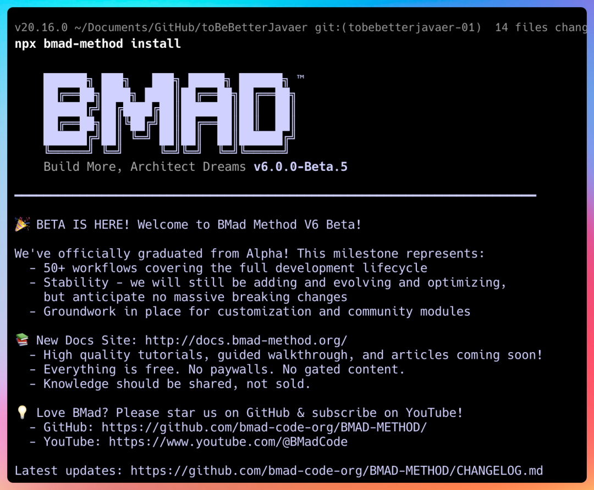
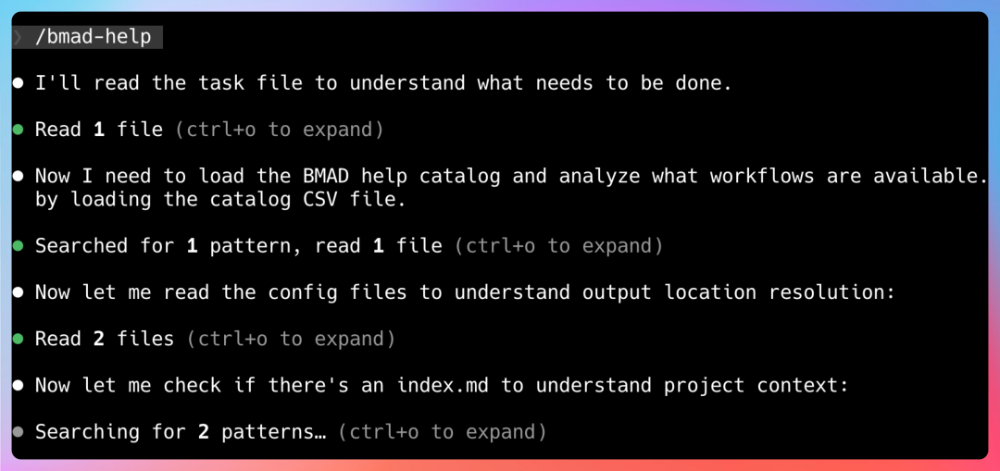

它用一整套多智能体（Multi-Agent）来模拟一个完整的软件团队（产品经理、架构师、开发、测试……），帮你把从想法到代码的全过程“流程化、文档化、可控化”。
🤔 为什么会有 BMAD-METHOD？
上下文丢失：项目一大，AI 就忘了之前的需求和架构，开始乱写。 计划混乱：今天加个登录，明天改个支付，需求像打补丁，代码越来越难维护。 文档缺失：很多项目做完，PRD、架构图、测试用例散落各处，甚至根本没有。
把 AI 从“写代码的工具”，升级为“遵循敏捷流程的虚拟开发团队”，让 AI 编程从“好玩”变成“可靠、可维护的生产力工具”。
💡 核心思路：AI 即团队 + 先规划后编码
AI 即团队：内置一整套专业 AI 代理（Analyst、PM、Architect、Scrum Master、Dev、QA 等），模拟真实团队角色。 先规划后编码：严格遵循“先规划，后编码”的敏捷思想，用 AI 把需求、架构、任务都梳理清楚，再进入实现阶段。
1. 代理规划（Agentic Planning）
2. 上下文工程化开发（Context-Engineered Development）
⚙️ 工作流程：四阶段闭环
🚀 如何使用 BMAD-METHOD？
npx bmad-method install执行完之后，BMad会在你的项目根目录下创建一个.bmad文件夹，里面包含了所有的工作流配置和Agent定义。

然后在Claude Code、Cursor、Windsurf这些AI IDE里打开项目，直接输入：
/bmad-help就能看到BMad的智能助手界面。

举个例子，你可以这样问：
"我有一个T恤生意，想做一个能撑住百万用户的Web应用，该怎么规划？"
BMad不会直接甩给你一堆代码，而是先派业务分析师Mary上场，帮你梳理需求、定义用户画像、明确MVP范围。
这就是BMad和其他AI工具最大的不同——它不是"替你思考"，而是"引导你思考"。
👍 核心优势
🆚 同类工具对比
工具/方法论 | 核心定位 | 与 BMAD 的主要区别 |
|---|---|---|
传统 AI 编程助手 | 代码补全、片段生成 | 无流程、无角色分工，易出现上下文丢失和架构混乱。 |
LangChain / AutoGPT | 通用大模型应用开发框架 | 偏向底层，需自行设计流程和角色，对敏捷开发实践支持不足。 |
Spec 方法论 / Kiro Spec | 规范驱动开发 (Spec-Driven) | 更轻量，侧重于“文档即规范”，AI 角色分工和流程化不如 BMAD 完整。 |
PRP / 6A 工作流 | 结构化 AI 协作流程 | 多为方法论或实践总结，缺少像 BMAD 这样成熟的开源框架和工具链支持。 |
和Cursor、Claude Code怎么选？
很多人会问，BMad和Cursor、Claude Code是什么关系？
直接说结论：BMad是"框架层"，Cursor和Claude Code是"工具层"。
你可以这样理解：
**Cursor：**给你一个会写代码的编辑器，适合快速原型、单兵作战 **Claude Code：**给你一个自主的编码助手，适合复杂文件操作、长任务规划 **BMad：**给你一套结构化开发流程，21个Agent带着你走完敏捷开发全流程
更重要的是，BMad可以在Cursor或者Claude Code之上使用。
你用Claude Code写代码，用BMad管理流程，两者是互补关系。
从社区反馈来看，Claude Code的代码重做率比Cursor低30%，文件操作更快。
BMad v6版本的改进后，Token消耗节省了90%，减少了"瞎猜"带来的无效生成。
我自己的体验是：
如果你只是想快速写个脚本、改个小功能，Cursor足够了 如果你要做一个完整的模块，涉及前后端联调，Claude Code更省心 如果你要从零做一个产品，或者重构一个大项目，BMad能帮你少走很多弯路
三者不是互斥，而是叠加。
🎯 适用场景
个人开发者：想从 0 到 1 开发完整项目，并希望过程规范、文档齐全。 小型团队/初创公司：人手不足，但希望项目有清晰的流程和文档，便于后期维护和交接。 技术负责人：希望为团队引入一套标准的 AI 辅助开发流程，提升整体效率和质量。 学习者：想系统学习现代软件工程（需求、架构、敏捷）的实践方法。
开源地址
关注公众号 回复 20260220 获得猜您喜欢：
【开源】133K star，爆火AI智能体 Clawdbot 数小时内两度更名，开源、本地运行、主动帮你干活：重新定义数字员工
【开源】93.6K Star！告别厂商锁定，完全开源、隐私优先的 AI 编程助手 ，支持 75+ 模型，用 AI 帮你读懂、重构、修复整个项目
【开源】28.4K star，一键解锁全网舆情！完全开源，不用写代码！这个AI工具让品牌/科研/公关的“读心术”更简单
【开源】3.1K Star ，一张照片 + 一段语音，打造会听会说的数字分身
6元解锁640+优质开源项目！技术会员群上线，包括70+低开平台，50+AI平台
添加微信进相关交流群，
备注“微服务”进群交流
备注“低开”进低开群交流
备注“AI”进AI大数据，数据治理群交流
备注“数字”进物联网和数字孪生群交流
备注“安全”进安全相关群交流
备注“自动”进自动化运维群交流
备注“试用”可以申请产品试用
备注“助手”进代码助手和插件交流群
备注“定制”可以定制项目，全源码交付